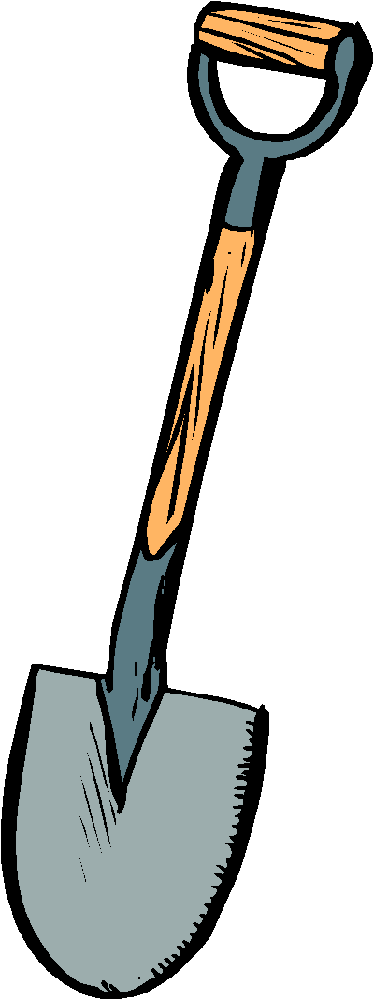
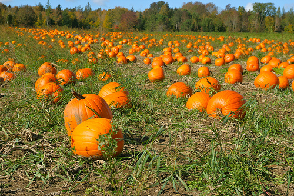

Dans les champs
Origine
La culture de la citrouille aurait débuté 5000 ans avant Jésus-Christ au Mexique. Le fruit était alors petit et on le cultivait pour ses graines comestibles. Ce n'est que vers le XVe siècle qu'elle a été intrpduite en Europe. De nos jours, la culture de la citrouille est présente sur tous les continents excepté l'Antarctique.

À retenir pour sa culture
- Les plants de citrouille prospèrent par temps chaud et ne tolèrent pas le froid.
- On peut les planter à la fin mai ou début juin en vue de les récolter à l'automne.
- La citrouille a des racines relativement profondes et tolère donc bien la sécheresse.
- On récolte la citrouille dès qu'elle a atteint sa maturité et que son écorce a durci.
- Il est important de l'arracher du plant avec une partie de la tige afin d'empêcher sa décomposition précoce.